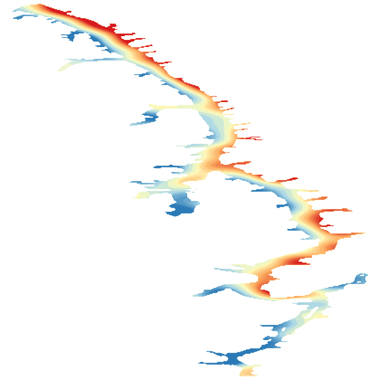

LakeScope › KY
Kentucky Lake today
Updated 2026-11-21 - Atlas Labs
Clear water, 58°F water, level steady, near normal, calm this morning.
Water level
354.73 ft
U.S. Army Corps of Engineers - 2026-11-21
7-day trend: steady (+0.11 ft). Compared with normal for this date: -0.0 ft (same weeks, 2016-2025).
Water clarity and algae
Clear water Last clear view: yesterday.
Surface temperature
58°F
seen from space on 2026-11-19

Ice
Open - 0% ice cover
Estimate from weather and satellite, not a measurement. Check the ice yourself before going on it.
Weather, next 3 days
| Day | Sky | High / low | Wind | Rain |
|---|---|---|---|---|
| Saturday | Sunny | 72 / 48°F | 5 mph SSE | 2% |
| Sunday | Sunny then Chance Rain Showers | 72 / 42°F | 5 mph SSW | 44% |
| Monday | Mostly Sunny | 57 / 32°F | 10 mph N | 0% |
Sunrise 06:36 - sunset 16:39 - Waxing gibbous. National Weather Service.
Get the LakeScope app: alerts and the 3-D view of Kentucky Lake